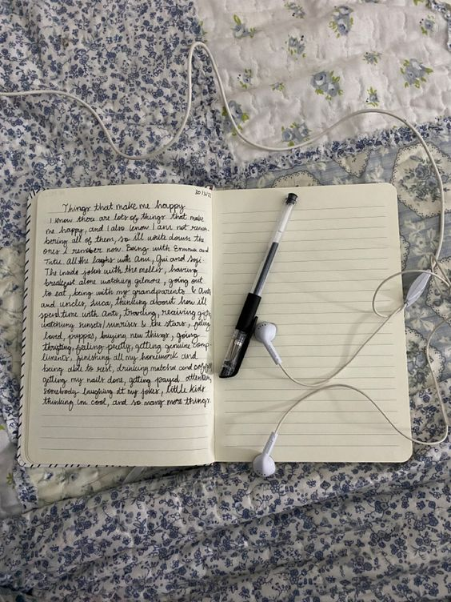
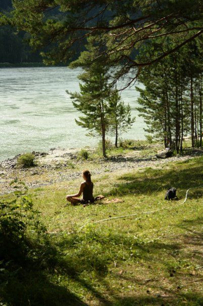
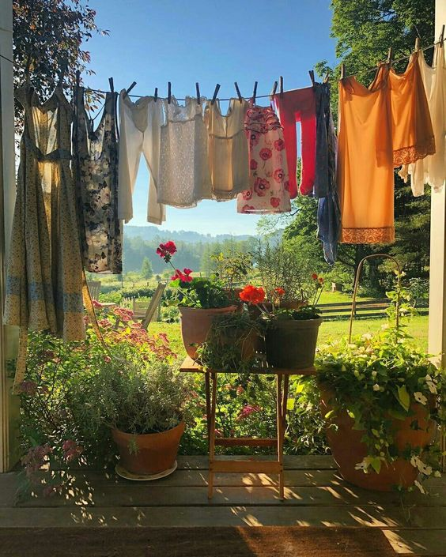

Journaling
Journaling is a powerful tool that offers a pause in the rush of life, allowing a moment of reflection and growth. With a myriad of journal types available, from scrapbooking to bullet-journaling and brain-dumping to religious reflections, there's a format tailored for every conceivable need, inviting a structured way to ponder and process. Companies have caught on, designing journals that cater to these diverse styles. Scientifically, journaling is more than just a creative outlet; studies have shown it can lead to significant health benefits, such as stress reduction, improved immune function, and better cognitive processing. It's a simple practice with profound impact, helping individuals to clarify their thoughts and feelings, understand themselves better, and enjoy a greater sense of well-being.
For me, journaling represents the ultimate form of self-care through introspection. I typically own three types of journals:
- My Diary
- I try to write in this one every single day. I write about everything and anything. It serves as a record of my growth as a person, and of my life. Mine is from Moleskin.
- Bible Time Journal
- This one is self-explanatory. I do my Bible Time in this one, writing down my thoughts and reflections on whatever chapter I am reading that day. One of my friends got me this journal from Leuchtturm1917.
- Bullet Journal
- My creative outlet. I create pages with no rules or conventions, allowing myself to put whatever I want on here. I recently got a new one from Papier.
Exercise
Exercise is not just a routine to keep the body fit; it's a profound form of self-care that nurtures both mind and body. Engaging in regular physical activity can be a transformative practice, offering a release from the daily grind and a boost in endorphins, commonly known as the 'feel-good' hormones. Whether it's a brisk walk in the park, a challenging yoga session, or an invigorating swim, exercise provides a structured escape, allowing for mental clarity and emotional resilience. Scientific research backs its myriad benefits, including reduced stress levels, enhanced mood, better sleep quality, and a strengthened immune system, making it an essential, holistic practice for overall well-being.
Exercise comes in a diverse array of forms, each with unique benefits and appeals. Weight lifting, for instance, is not just about building muscle; it also strengthens the bones and improves metabolic rate. Hot yoga, performed in a heated room, not only enhances flexibility but also aids in detoxification and can be a vigorous workout in its own right. Cardio activities like running, cycling, and kickboxing get the heart pumping and can improve cardiovascular health, while also being effective for burning calories and reducing stress.
Pilates is another form of exercise that focuses on core strength, posture, and flexibility, with movements that can be adapted to various fitness levels. Meanwhile, cycling offers a low-impact workout that can range from a leisurely ride to intense sprints, suitable for outdoor exploration or a focused indoor session. Boxing and kickboxing are dynamic workouts that combine strength and cardio, providing a powerful outlet for stress while improving coordination and stamina.
Here is a list of YouTubers who post great at-home exercises:
Each of these exercises allows individuals to find a fitness routine that resonates with their personal preferences, offering varied paths to enhance their physical health and promote mental well-being. Whether one seeks the solitary focus of a long-distance run or the collective energy of a group cycling class, the important thing is to find joy in movement and make it a consistent part of self-care.
Reset Your Space
Resetting your space is an often overlooked yet vital aspect of self-care. It's about decluttering not just your physical surroundings but also clearing the mental cobwebs that come from living in disarray. This reset can involve deep cleaning every nook and cranny, washing and refreshing your sheets, tackling the laundry pile, and purging expired items from the fridge. The act of cleaning is meditative and transformative; it's about taking control of your environment and, by extension, a sense of control in your life. A tidy space is a canvas for a tidy mind, inviting calmness and order into your daily routine.
The benefits of a reset space extend far beyond the immediate gratification of cleanliness. Living in a clean and organized environment can significantly reduce stress and anxiety levels, providing a serene atmosphere conducive to relaxation and focused thought. The act of cleaning itself can be therapeutic, offering a sense of accomplishment and a physical manifestation of care. It promotes a disciplined lifestyle and can improve sleep quality, as a clean, fresh bed invites restfulness. Moreover, maintaining a clean refrigerator can lead to healthier eating habits as it makes room for nourishing foods and clears out the clutter that often leads to food waste. In essence, resetting your space is a practice in mindfulness, one that nourishes both the home and the soul.
Good music is important while cleaning.